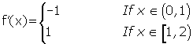

Mean Value Theorem Word Problems
1Is Rolle's theorem applicable to the function f(x) = |x − 1| on the interval [0, 2]?
2Determine if the function f(x) = x − x3 satisfies the conditions of Rolle's theorem on the interval [−1, 0] and [0, 1]. In the affirmative case, determine the values of c.
3 Does the function f(x) = 1 − x satisfy the conditions of Rolle's theorem on the interval [−1, 1]?
4Prove that the equation 1 + 2x + 3x2 + 4x3 = 0 has a unique solution.
5How many roots does the equation x3 + 6x2 + 15x − 25 = 0 have?
6Prove that the equation 2x3 − 6x + 1 = 0 has only one real solution on the interval (0, 1).
7 Can the mean value theorem be applied to f(x) = 4x2 − 5x + 1 on [0, 2]?
8Can the mean value theorem be applied to f(x) = 1/ x2 on [0, 2]?
9In the segment of the parabola between the points A = (1, 1) and B = (3, 0), find a point whose tangent is parallel to the chord.
10 Calculate a point on the interval [1, 3] in which the tangent to the curve y = x3 − x2 + 2 is parallel to the line determined by the points A = (1, 2) and B = (3, 20). What theorem guarantees the existence of this point?
11 Determine a and b for the function:
If it satisfies the hypothesis of mean value theorem on the interval [2, 6].
1
Is Rolle's theorem applicable to the function f(x) = |x - 1| on the interval [0, 2]?
The function is continuous on [0, 2].
Rolle's Theorem is not applicable to the function because it is not differentiable at x = 1.


2
Determine if the function f(x) = x − x3 satisfies the conditions of Rolle's theorem on the interval [−1, 0] and [0, 1]. In the affirmative case, determine the values of c.
f(x) is a continuous function on the interval [−1, 0] and [0, 1], and differentiable on the open intervals (−1, 0) and (0, 1) because it is a polynomial function.
Also, it is determined that:
f(−1) = f(0) = f(1) = 0
Therefore, Rolle's Theorem is applicable.

3
Does the function f(x) = 1 − x satisfy the conditions of Rolle's Theorem on the interval [−1, 1]?
The function is continuous on the interval [−1, 1] and differentiable on (−1, 1) because it is a polynomial function.
Rolle's Theorem is not satisfied because f(−1) ≠ f(1).
4
Prove that the equation 1 + 2x + 3x2 + 4x3 = 0 has a unique solution.
It can be proven by the reductio ad absurdum arguement.
If the function had two different roots x1 and x2, being x1< x2 , there would be:
f(x1) = f(x2) = 0
And since the function is continuous and differentiable (as it is a polynomial function), Rolle's theorem can be applied, which states that c  (x1, x2) exists such that f' (c) = 0.
(x1, x2) exists such that f' (c) = 0.
f' (x) = 2 + 6x + 12x2 f' (x) = 2 (1+ 3x + 6x2).
But f'(x) ≠ 0 and does not admit real solutions because the discriminant is negative:
Δ = 9 − 24 < 0.
Since the derivative is not annulled at any value, it contradicts Rolle´s theorem and it is determined that there are two false roots.
5
How many roots does the equation x3 + 6x2 + 15x − 25 = 0 have?
The function f(x) = x3 + 6x2 + 15x − 25 is continuous and differentiable on  ·
·
f(0) = −25
f(2) = 37
So the equation has at least one solution in the interval (0, 2).
Rolle's theorem.
f' (x) = 3x2 + 12x +15
Since the derivative is not annulled as its discriminant is negative, the function is strictly increasing and has a single root.
6
Prove that the equation 2x3 − 6x + 1 = 0 has only one real solution on the interval (0, 1).
The function f(x) = 2x3 − 6x + 1 is continuous and differentiable on ·
f(0) = 1
f(1) = −3
So, the equation has at least one solution in the interval (0, 1).
Rolle's theorem.
f' (x) = 6x2 - 6 6x2 - 6 = 0 6(x − 1) (x + 1) = 0
The derivative is annulled at x = 1 and x = −1, therefore there cannot be two roots in the interval (0, 1).
7
Can the mean value theorem be applied to f(x) = 4x2 − 5x + 1 on [0, 2]?
f(x) is continuous on [0, 2] and differentiable on (0, 2) therefore it is possible to apply the intermediate value theorem:
8
Can the mean value theorem be applied to f(x) = 1/ x2 on [0, 2]?
The function is not continuous on [−1, 2] since is not defined at x = 0.
9
In the segment of the parabola between the points A = (1, 1) and B = (3, 0), find a point whose tangent is parallel to the chord.
The points A = (1, 1) and B = (3, 0) belong to the parabola of equation y = x2 + bx + c.
Since the function is a polynomial, the mean value theorem can be applied on the interval [1, 3].

10
Calculate a point on the interval [1, 3] in which the tangent to the curve y = x3 − x2 + 2 is parallel to the line determined by the points A = (1, 2) and B = (3, 20). What theorem guarantees the existence of this point?
Find the equation of the straight line that passes through the two points.

Since y = x3 − x2 + 2 is continuous on [1, 3] and differentiable on (1, 3), the intermediate value theorem can be applied:


11
Determine a and b for the function:
If it satisfies the hypothesis of the mean value theorem on the interval [2, 6].
First, it must fulfill that the function is continuous on [2, 6].


Second, it must be determined that the function is differentiable on (2, 6).